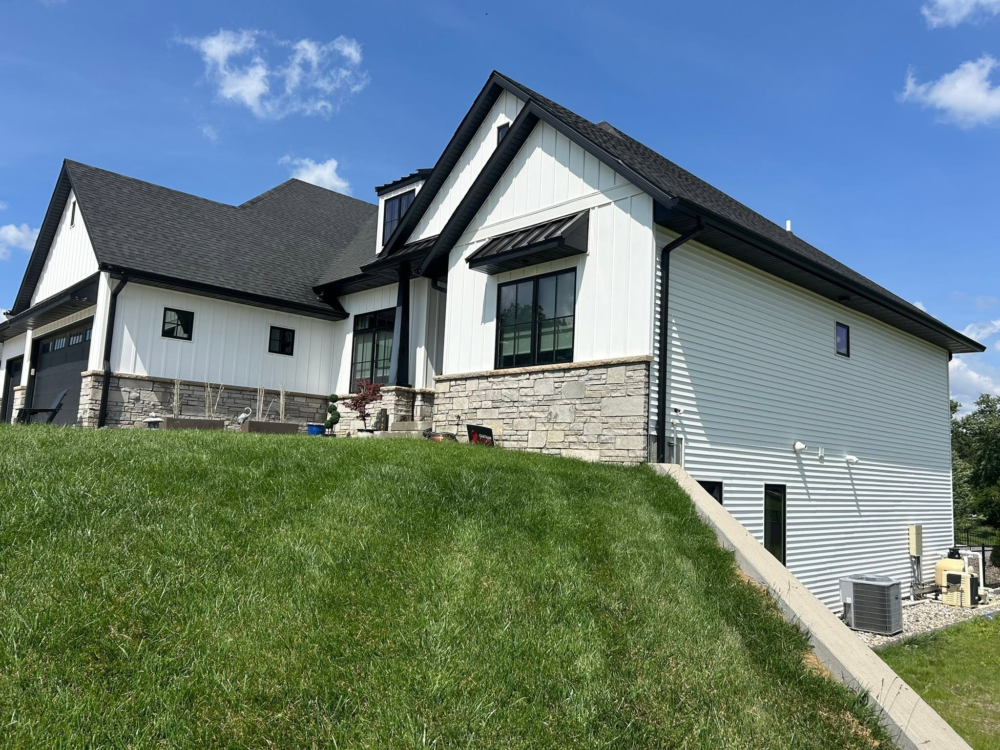
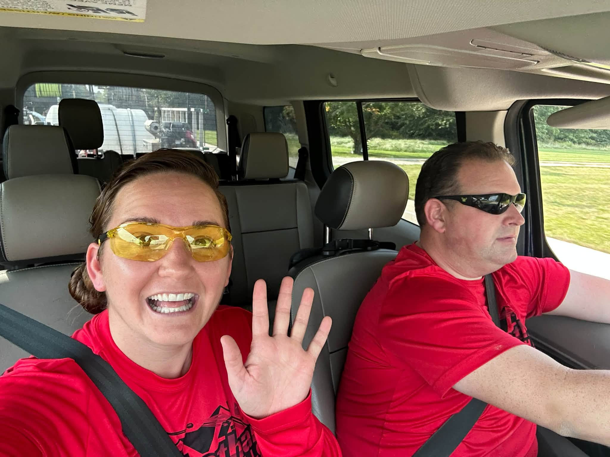

HOUSE WASHING & SOFT WASHING IN CHATHAM, IL
A Cleaner,
Brighter Home
Starts Here.
Professional house washing, siding cleaning, and exterior soft washing for homes and businesses in Chatham, Illinois and surrounding communities.
OUR SERVICES
See What We Can Clean.
Real results for your home's exterior. Explore the services DC Chatham Softwash offers.

OWNER-OPERATED
Meet the Owners.
Get to know the people behind DC Chatham Softwash.

The Person Who Quotes Your Job Is the Person Who Does It.
DC Chatham Softwash was built on a simple standard: do it the right way, explain it honestly, and leave every home looking brand new.
Owners Daniel and Candace Hill are trained in soft wash chemistry and surface-specific techniques. They're personally on-site for every job, bringing careful, knowledgeable service to every property.
You work directly with the owners, from your first quote through the finished job.
✓ Fully Insured
✓ Softwash Trained
✓ Owner-Operated
✓ Personal Service
Get a Free Quote
REAL RESULTS
See the Difference
Drag the slider to compare before and after.

THE DC DIFFERENCE
Why Choose DC Chatham Softwash?
Someone you trust recommended us. Here's what makes our approach different.
01
Locally Owned
Proudly serving Chatham and surrounding communities with a personal approach.
02
Professional Softwashing
Exterior cleaning methods selected with your home's surfaces in mind.
03
Care for Your Property
Attention to the details that matter, including surrounding landscaping.
04
Visible Results
Explore real before-and-after photos and see what professional cleaning can accomplish.
KNOW THE DIFFERENCE
Why We Don't Blast Your Home Clean
Not every surface should be cleaned with high-pressure water. The right method matters.
GENTLE APPROACH
Soft Washing
Low-pressure water and specialized cleaning solutions target algae, mold, mildew, and exterior buildup.
- Lower pressure on delicate surfaces
- Treats organic growth
- Ideal for many siding and roof materials
- Landscaping protection during cleaning
HIGH-PRESSURE APPROACH
Pressure Washing
Uses powerful water pressure to physically remove dirt and grime. Effective on suitable hard surfaces, but potentially damaging to delicate materials.
- Uses greater water pressure
- Removes buildup through water force
- Useful for durable concrete surfaces
- Can damage siding or shingles if misused
The Right Method. The Right Results.
DC Chatham Softwash focuses on surface-specific cleaning techniques to deliver results while treating your property with care.
Request a Free QuoteReady for a Fresh Start?
Professional exterior cleaning can transform your property's appearance.
Demo only — quote requests are not yet enabled.